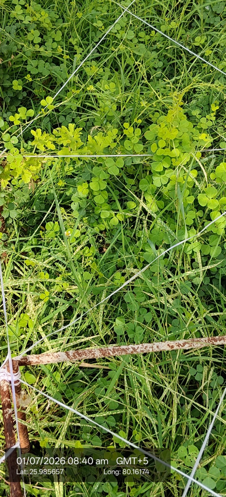

| Scientific name | Oxalis corniculata |
|---|---|
| Type | Perennial herb, prostrate and creeping |
| Category | Herbs |
Habitat & Growing Conditions
- Native to India and very common across UP, including Kanpur. Grows as a weed in lawns, gardens, fields, and wastelands
- Thrives in warm, moist tropical and subtropical climates. Appears heavily during monsoon and post-monsoon
- Prefers partial shade to full sun. Grows in moist, fertile soil but tolerates poor soil too
- Spreads fast by seeds and creeping stems that root at nodes. Forms dense mats in gardens, pots, and lawns
- Common in shaded areas under trees, along pathways, and in cultivated beds. The plant in your photo is growing under a trellis/frame
Ecological & Economic Importance
- Medicinal: Used in Ayurveda and folk medicine. Leaves are sour and used for indigestion, fever, scurvy, skin diseases, and as a coolant. Rich in vitamin C and oxalates. Note: High oxalate content can cause issues if eaten in excess. Consult a healthcare professional before medicinal use
- Edible: Tender leaves have a tangy, lemony taste. Used in chutneys and as garnish in some regions. Eaten in small quantities only
- Fodder: Sometimes grazed by livestock, though not a preferred fodder
- Weed: Considered an aggressive weed in gardens, lawns, and nurseries. Competes with crops and ornamental plants for nutrients
- Soil indicator: Often grows in moist, slightly acidic soils. Its presence indicates good soil moisture
- Dye: Yields a yellow dye from flowers, though rarely used now